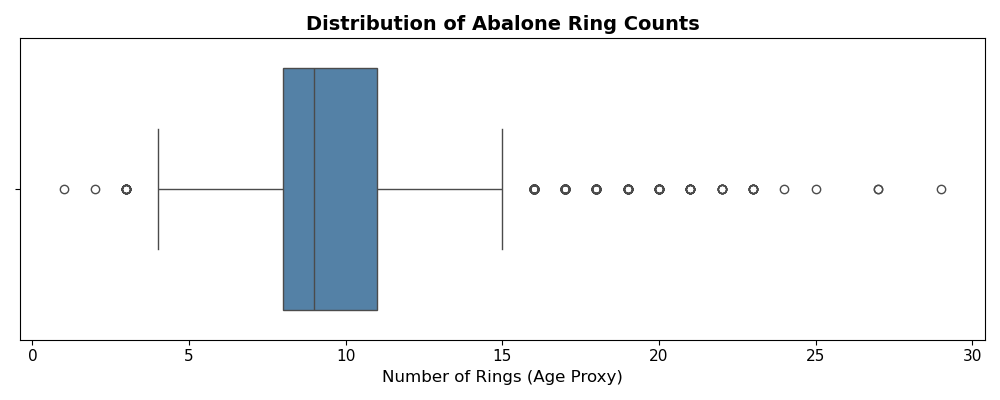
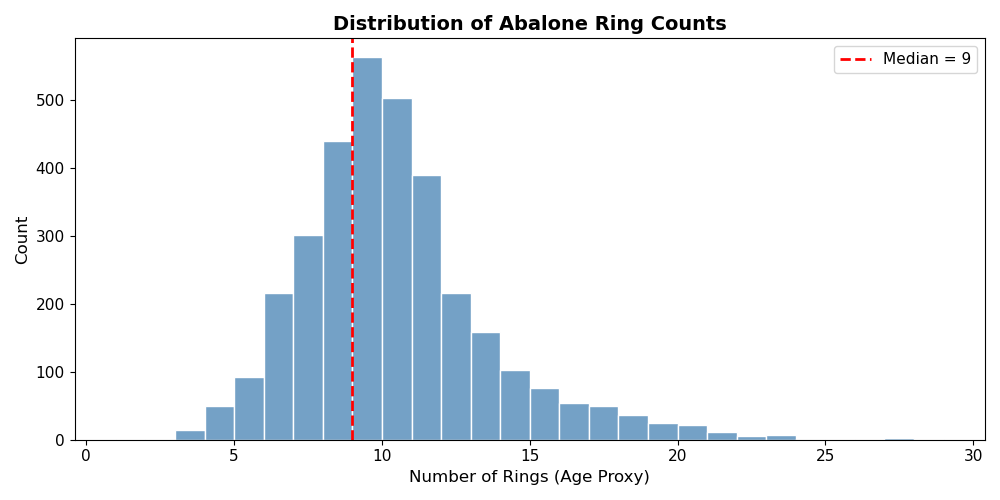
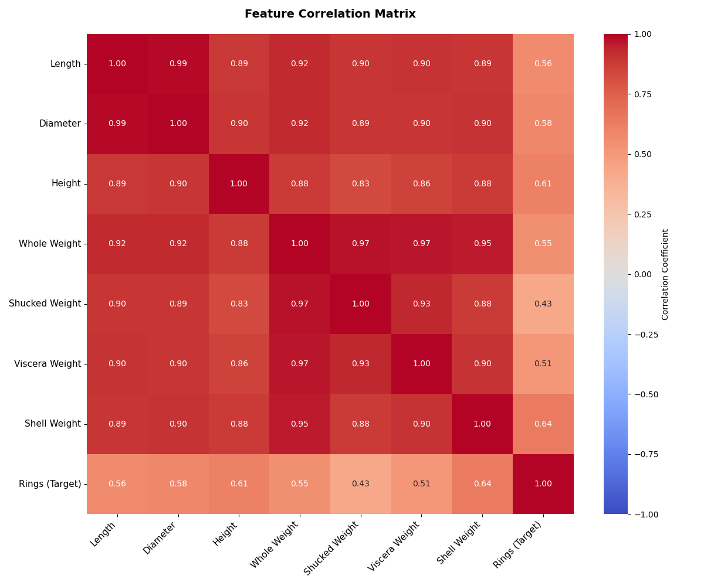
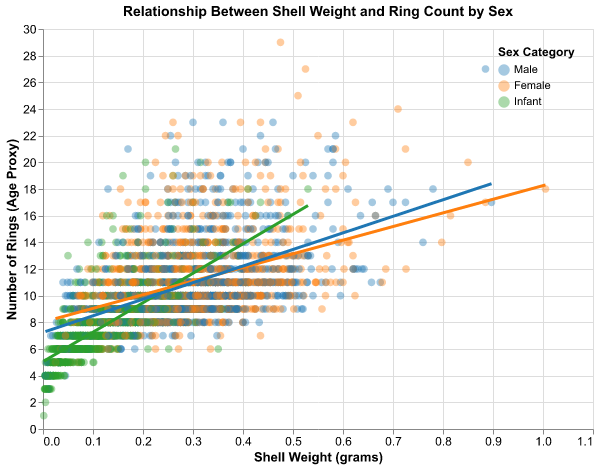
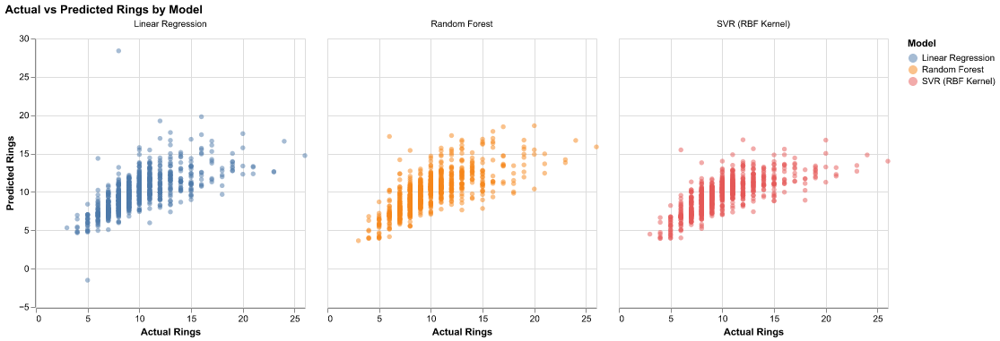
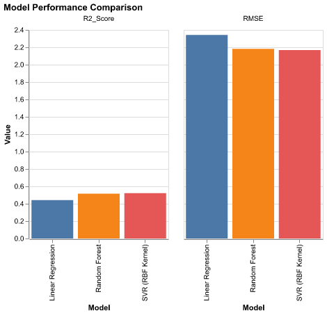

Predictive Models of the Age of Abalones Based on Physical Characteristics
Summary
In this report, we aim to create an effective model which can predict age of Abalone accurately based on individual physical characteristics. We perform exploratory data analysis and visualization, test both linear and non-linear models on our data, then compare models through regression metrics.
Introduction
Abalone are marine mollusks that are commercially important in fisheries and aquaculture, particularly in regions such as Tasmania. Estimating the age structure of abalone populations is essential for setting sustainable harvest limits and monitoring stock health. However, the standard method for determining age requires cutting the shell through the cone, staining it, and counting growth rings under a microscope—a destructive, time-consuming, and labor-intensive procedure (W. Nash et al. (1994)). Because of this, methods that can infer age from simple, non-destructive measurements of the animal are of practical interest to biologists, fisheries managers, and growers.
Here, we ask whether we can use a machine learning model to predict the age of an abalone from basic physical measurements. Specifically, we will explore linear regression models in Python (Python Core Team (2025)) to relate age to various attributes, including sex, shell length, diameter, height, and several weight measurements. To investigate this question, we use the UCI Abalone dataset (S. Nash Warwick and Ford (1994)), which contains 4,177 abalones with eight predictor variables and a target variable, “Rings”. Each row corresponds to one abalone, and the recorded features include sex (male, female, infant), three shell size measurements (length, diameter, height), and four weight measurements (whole, shucked, viscera, and shell weight). The number of rings serves as a proxy for age, with age in years given approximately by Rings + 1.5 [2], to account for any rings missed in counting (they can be difficult to see). By building and evaluating linear regression models on this dataset, we aim to understand how well these readily obtained physical measurements can predict abalone age and what this implies for practical, non-destructive age estimation.
Methods
In this section, we describe the data acquisition, preprocessing steps, and modeling approaches used to predict abalone age from physical measurements. We follow the golden rule of machine learning by splitting our data into training and test sets before any exploratory analysis or model fitting, ensuring that our test set remains completely unseen until final evaluation.
How We Split The Data
Following the golden rule of machine learning, we split the data into training (80%) and test (20%) sets before performing any exploratory analysis or model fitting. This ensures that our test set remains completely unseen during the entire modeling process, giving us an unbiased estimate of how well our models will generalize to new, unseen abalones. All subsequent exploratory data analysis and visualizations use only the training data.
4. Data Validation
Before proceeding with analysis, we validate the data quality using Pandera schema validation. This ensures our data meets expected constraints (correct types, reasonable value ranges, no missing values in critical columns) and helps catch any data quality issues early in the pipeline.
Correct Data File Format
Data Validation Using Panderas
Distribution of Target

Observation: There are outliers on the high end (older abalones), but no anomalous values below 0 or unreasonably high values. The outliers represent legitimately old abalones rather than data errors.

Observation: The distribution shows a slight right skew, with most abalones having between 7-12 rings. This suggests age distribution in the sample is not perfectly normal, which may affect model assumptions.
Correlations

Observation: Features show moderate positive correlations with Rings (0.5-0.6), indicating that physical measurements do contain predictive signal for age. However, there are high correlations among the features themselves (>0.9 between weights and dimensions), suggesting multicollinearity. This could affect linear regression coefficient interpretation, though it doesn’t necessarily harm prediction accuracy. Non-linear models like Random Forest are less sensitive to multicollinearity.
5. Exploratory Data Analysis (EDA)
The exploratory analysis below is performed only on the training set to avoid any data leakage from the test set. This ensures our understanding of the data and any decisions made based on EDA do not inadvertently incorporate information from the held-out test data.
Summary
- Mostly numerical variables except sex.
- No missing values.
- Target (Rings) ranges from 1 to 29. Mostly normal, slight right skew.
- Sex needs to be one-hot encoded, the rest should be scaled.
- Numeric variables are moderately positively correlated with target.
Visualisation
Below, we investigate the possible relationship between sex of adults (M/F), Infants, and number of rings, as the relationship may differ between those categories.

Observation: The relationship between shell weight and age appears roughly linear within each sex category, but the slopes differ—particularly for Infants, which show a steeper growth curve. This suggests that age-weight relationships may depend on developmental stage, supporting the inclusion of Sex as a feature in our models.
6. Model Selection and Training
Why These Models?
To address our research question—whether physical measurements can predict abalone age—we test three modeling approaches that span the complexity spectrum:
Linear Regression (Baseline): We start with linear regression because it provides an interpretable baseline. If a linear relationship exists between physical measurements and age, this model will capture it. The coefficients also help us understand which features contribute most to predicting age, which is valuable for biological interpretation.
Random Forest Regressor: We include this ensemble method because biological growth patterns are often non-linear. Random Forest can capture complex interactions between features (e.g., the relationship between weight and age may differ for different shell sizes) without requiring us to manually specify these interactions.
Support Vector Regression (SVR): We test SVR with an RBF kernel as another non-linear approach. SVR is effective when relationships are complex but the number of features is moderate, as in our case.
Evaluation Metrics
We evaluate models using two complementary metrics: - Root Mean Squared Error (RMSE): Measures the average prediction error in the same units as the target (rings). Lower RMSE indicates better predictive accuracy. We use RMSE rather than MSE because it’s more interpretable—an RMSE of 2.0 means predictions are off by about 2 rings on average. - R² (Coefficient of Determination): Represents the proportion of variance in the target explained by the model. R² = 1.0 means perfect prediction; R² = 0 means the model is no better than predicting the mean. This helps us understand how much of the age variation is captured by physical measurements.
Model A: Linear Regression (Baseline)
We construct a preprocessing pipeline that: 1. One-hot encodes the categorical Sex feature (to handle the three categories: M, F, I) 2. Standardizes numerical features (important for comparing coefficients) 3. Fits a Linear Regression model
Results
In this section, we present the results of our model training and evaluation. All models were trained exclusively on the training set, and evaluation metrics are computed on the held-out test set to ensure unbiased performance estimates.
7. Linear Regression Results
We evaluate the linear regression model by examining both quantitative metrics and visual diagnostics. The scatter plot below compares predicted vs. actual ring counts—points along the diagonal indicate accurate predictions.

this figure is MISSING from the results folder. the one above is not correct. Should be figure 5.
Interpretation: The model tends to under-predict for older abalones (high ring counts) and shows considerable scatter throughout, consistent with the moderate R² value of ~0.44. This suggests that linear relationships alone cannot fully capture how age relates to physical measurements.
this table is MISSING from the results folder.Interpretation: Since features are standardized, coefficient magnitudes are comparable. Whole weight shows the strongest positive association with age, while Shucked weight has a strong negative coefficient. This counterintuitive pattern (since both weights should increase with age) is likely due to multicollinearity among weight features—when correlated features are included together, their individual coefficients can be difficult to interpret. This further motivates our use of non-linear models that are less sensitive to multicollinearity.
8. Non-Linear Model Results
Given that the linear model explains only about 44% of the variance (R² ≈ 0.44), we now test non-linear models to see if they can capture more complex relationships in the data.
Model B: Random Forest Regressor
Random Forest builds multiple decision trees on bootstrapped samples and averages their predictions. This approach can capture non-linear patterns and feature interactions without overfitting. We use 100 trees with default hyperparameters as a reasonable starting point.
Model C: Support Vector Regression (SVR)
SVR with a Radial Basis Function (RBF) kernel maps the data into a higher-dimensional space where non-linear relationships become linear. This approach is particularly effective when the number of features is moderate. Note that feature scaling is critical for SVR performance, which is why we standardize all numeric features in our preprocessing pipeline.
9. Model Comparison
To determine which approach best addresses our research question, we compare all three models side-by-side using the same test set. This ensures a fair comparison since all models were trained on identical training data and evaluated on identical test data that was never seen during training.

Key Finding: Both non-linear models (Random Forest and SVR) outperform the linear baseline, with SVR achieving the best performance (lowest RMSE of 2.17, highest R² of 0.52). This confirms that the relationship between physical measurements and abalone age contains non-linear components that simple linear regression cannot capture.
Discussion
In this report, we tested three different models to find which model was best at predicting the number of rings (as a proxy for age) of abalone molluscs. The baseline Linear Regression model explains about 44% of the variance in ring count (R² = 0.44) using size and weight measurements, with a root mean squared error (RMSE) of approximately 2.34 rings. This means the model’s predictions are typically off by about 2.3 rings on average.
The other two models tested were non-linear approaches. The Random Forest model achieves higher R² (0.52) and lower RMSE (2.18 rings) than the linear baseline, demonstrating that abalone growth patterns are not purely linear in relation to physical features. The Support Vector Regression (SVR) with an RBF kernel shows the best performance among the three models, with an RMSE of 2.17 rings and R² of 0.52. Both non-linear models capture approximately 8% more variance than the linear model, confirming that physical measurements and age have non-linear relationships.
Although the linear model did not perform as well as the non-linear models, extracting the standardized coefficients reveals important patterns in our data. Whole Weight showed the strongest positive coefficient, while Shucked Weight had a strong negative coefficient. This counterintuitive pattern (since both weights should increase with age) indicates multicollinearity among the weight features—when highly correlated predictors are included together, their individual coefficients become difficult to interpret reliably. This observation further supports our use of non-linear models that are less sensitive to multicollinearity.
Within the context of biological organisms, that a linear regression model did not perform well is unsurprising. Growth rate, which impacts features such as those in our dataset, can be highly variable depending on biotic and abiotic factors. A linear regression model cannot capture enough of the variance present in the dataset. In a literature review by Guney et al. (2022), the authors reviewed six different predictive models of abalone age based on physical characteristics and found that the BPFFNN model had the highest test accuracy, followed by a random forest model (Guney et al. 2022). This aligns with our findings that non-linear models outperform linear approaches.
Practical Implications: Estimating abalone age in a non-destructive way is important for fisheries managers and aquaculture growers. Our results suggest that non-linear models using physical measurements can predict age with reasonable accuracy (±2.2 rings). However, with an R² of only 0.52, the models still leave about 48% of the variance unexplained. Future work could improve predictions by incorporating environmental features (e.g., water temperature, location), addressing multicollinearity through feature selection or regularization, and testing more sophisticated models such as neural networks.